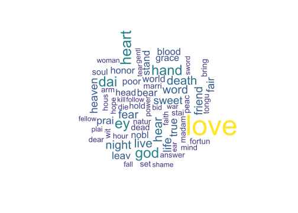

Shakespeare Start to Finish
The following attempts to demonstrate the usual difficulties one encounters dealing with text by procuring and processing the works of Shakespeare. The source is MIT which has made the ‘complete’ works available on the web since 1993, plus one other from Gutenberg. The initial issue is simply getting the works from the web. Subsequently there is metadata, character names, stopwords etc. to be removed. At that point we can stem and count the words in each work, which, when complete, puts us at the point we are ready for analysis.
The primary packages used are tidytext, stringr, and when things are ready for analysis, quanteda.
ACT I. Scrape Moby and Gutenberg Shakespeare
Scene I. Scrape main works
Initially we must scrape the web to get the documents we need. The rvest package will be used as follows.
- Start with the url of the site
- Get the links off that page to serve as base urls for the works
- Scrape the document for each url
- Deal with the collection of Sonnets separately
- Write out results
library(rvest); library(tidyverse); library(stringr)
page0 = read_html('http://shakespeare.mit.edu/')
works_urls0 = page0 %>%
html_nodes('a') %>%
html_attr('href')
main = works_urls0 %>%
grep(pattern='index', value=T) %>%
str_replace_all(pattern='index', replacement='full')
other = works_urls0[!grepl(works_urls0, pattern='index|edu|org|news')]
works_urls = c(main, other)
works_urls[1:3]Now we just paste the main site url to the work urls and download them. Here is where we come across our first snag. The html_text function has what I would call a bug but what the author feels is a feature. Basically it ignores line breaks of the form
in certain situations. This means it will smash text together that shouldn’t be, thereby making any analysis of it fairly useless8. Luckily, @rentrop provided a solution, which is in r/fix_read_html.R.
works0 = lapply(works_urls, function(x) read_html(paste0('http://shakespeare.mit.edu/', x)))
source('r/fix_read_html.R')
html_text_collapse(works0[[1]]) #works
works = lapply(works0, html_text_collapse)
names(works) = c("All's Well That Ends Well" "As You Like It" "Comedy of Errors"
"Cymbeline" "Love's Labour's Lost" "Measure for Measure"
"The Merry Wives of Windsor" "The Merchant of Venice" "A Midsummer Night's Dream"
"Much Ado about Nothing" "Pericles Prince of Tyre" "The Taming of the Shrew"
"The Tempest" "Troilus and Cressida" "Twelfth Night"
"The Two Gentlemen of Verona" "The Winter's Tale" "King Henry IV Part 1"
"King Henry IV Part 2" "Henry V" "Henry VI Part 1"
"Henry VI Part 2" "Henry VI Part 3" "Henry VIII"
"King John" "Richard II" "Richard III"
"Antony and Cleopatra" "Coriolanus" "Hamlet"
"Julius Caesar" "King Lear" "Macbeth"
"Othello" "Romeo and Juliet" "Timon of Athens"
"Titus Andronicus" "Sonnets" "A Lover's Complaint"
"The Rape of Lucrece" "Venus and Adonis" "Elegy")Scene II. Sonnets
We hit a slight nuisance with the Sonnets. The Sonnets have a bit of a different structure than the plays. All links are in a single page, with a different form for the url, and each sonnet has its own page.
sonnet_urls = paste0('http://shakespeare.mit.edu/', grep(works_urls0, pattern='sonnet', value=T)) %>%
read_html() %>%
html_nodes('a') %>%
html_attr('href')
sonnet_urls = grep(sonnet_urls, pattern = 'sonnet', value=T) # remove amazon link
# read the texts
sonnet0 = purrr::map(sonnet_urls, function(x) read_html(paste0('http://shakespeare.mit.edu/Poetry/', x)))
# collapse to one 'Sonnets' work
sonnet = sapply(sonnet0, html_text_collapse)
works$Sonnets = sonnetScene III. Save and write out
Now we can save our results so we won’t have to repeat any of the previous scraping. We want to save the main text object as an RData file, and write out the texts to their own file. When dealing with text, you’ll regularly want to save stages so you can avoid repeating what you don’t have to, as often you will need to go back after discovering new issues further down the line.
save(works, file='data/texts_raw/shakes/moby_from_web.RData')
# This will spit the text to the console unfortunately
purrr::map2(works,
paste0('data/texts_raw/shakes/moby/', str_replace_all(names(works), " |'", '_'), '.txt'),
function(x, nam) write_lines(x, path=nam))Scene IV. Read text from files
After the above is done, it’s not required to redo, so we can always get what we need. I’ll start with the raw text as files, as that is one of the more common ways one deals with documents. When text is nice and clean, this can be fairly straightforward.
The function at the end comes from the tidyr package. Up to that line, each element in the text column is the entire text, while the column itself is thus a ‘list-column’. In other words we have a 42 x 2 matrix. But to do what we need, we’ll want to have access to each line, and the unnest function unpacks each line within the title. The first few lines of the result is shown after.
library(tidyverse); library(stringr)
shakes0 =
data_frame(file = dir('data/texts_raw/shakes/moby/', full.names = TRUE)) %>%
transmute(id = basename(file), text) %>%
unnest(text)
save(shakes0, file='data/initial_shakes_dt.RData')
# Alternate that provides for more options
# library(readtext)
# shakes0 =
# data_frame(file = dir('data/texts_raw/shakes/moby/', full.names = TRUE)) %>%
# mutate(text = map(file, readtext, encoding='UTF8')) %>%
# unnest(text)Scene V. Add additional works
It is typical to be gathering texts from multiple sources. In this case, we’ll get The Phoenix and the Turtle from the Project Gutenberg website. There is an R package that will allow us to work directly with the site, making the process straightforward9. I also considered two other works, but I refrained from “The Two Noble Kinsmen” because like many other of Shakespeare’s versions on Gutenberg, it’s basically written in a different language. I also refrained from The Passionate Pilgrim because it’s mostly not Shakespeare.
When first doing this project, I actually started with Gutenberg, but it became a notable PITA. The texts were inconsistent in source, and sometimes reproduced printing errors purposely, which would have compounded typical problems. I thought it could have been solved by using the Complete Works of Shakespeare but the download only came with that title, meaning one would have to hunt for and delineate each separate work. This might not have been too big of an issue, except that there is no table of contents, nor consistent naming of titles across different printings. The MIT approach, on the other hand, was a few lines of code. This represents a common issue in text analysis when dealing with sources, a different option may save a lot of time in the end.
The following code could be more succinct to deal with one text, but I initially was dealing with multiple works, so I’ve left it in that mode. In the end we’ll have a tibble with an id column for the file/work name, and another column that contains the lines of text.
library(gutenbergr)
works_not_included = c("The Phoenix and the Turtle") # add others if desired
gute0 = gutenberg_works(title %in% works_not_included)
gute = lapply(gute0$gutenberg_id, gutenberg_download)
gute = mapply(function(x, y) mutate(x, id=y) %>% select(-gutenberg_id),
gute, works_not_included,
SIMPLIFY=F)
shakes = shakes0 %>%
bind_rows(gute) %>%
mutate(id = str_replace_all(id, " |'", '_')) %>%
mutate(id = str_replace(id, '.txt', '')) %>%
arrange(id)
# shakes %>% split(.$id) # inspect
save(shakes, file='data/texts_raw/shakes/shakes_df.RData')ACT II. Preliminary Cleaning
If you think we’re even remotely getting close to being ready for analysis, I say Ha! to you. Our journey has only just begun (cue the Carpenters).
Now we can start thinking about prepping the data for eventual analysis. One of the nice things about having the data in a tidy format is that we can use string functionality over the column of text in a simple fashion.
Scene I. Remove initial text/metadata
First on our to-do list is to get rid of all the preliminary text of titles, authorship etc. This is fairly easy when you think that every text will start with ACT I, or in the case of the Sonnets, the word ‘Sonnet’. We want to drop all text up to those points. I’ve created a function that will do that, and then just apply it to each works tibble10. For the poems and A Funeral Elegy for Master William Peter, we look instead for the line where his name or initials start the line.
source('r/detect_first_act.R')
shakes_trim = shakes %>%
split(.$id) %>%
lapply(detect_first_act) %>%
bind_rows
shakes %>% filter(id=='Romeo_and_Juliet') %>% head# A tibble: 6 x 2
id text
<chr> <chr>
1 Romeo_and_Juliet Romeo and Juliet: Entire Play
2 Romeo_and_Juliet
3 Romeo_and_Juliet
4 Romeo_and_Juliet
5 Romeo_and_Juliet
6 Romeo_and_Juliet Romeo and Julietshakes_trim %>% filter(id=='Romeo_and_Juliet') %>% head# A tibble: 6 x 2
id text
<chr> <chr>
1 Romeo_and_Juliet
2 Romeo_and_Juliet
3 Romeo_and_Juliet PROLOGUE
4 Romeo_and_Juliet
5 Romeo_and_Juliet
6 Romeo_and_Juliet Scene II. Miscellaneous removal
Next, we’ll want to remove empty rows, any remaining titles, lines that denote the act or scene, and other stuff. I’m going to remove the word prologue and epilogue as a stopword later. While some texts have a line that just says that (PROLOGUE), others have text that describes the scene (Prologue. Blah blah) and which I’ve decided to keep. As such, we just need the word itself gone.
titles = c("A Lover's Complaint", "All's Well That Ends Well", "As You Like It", "The Comedy of Errors",
"Cymbeline", "Love's Labour's Lost", "Measure for Measure",
"The Merry Wives of Windsor", "The Merchant of Venice", "A Midsummer Night's Dream",
"Much Ado about Nothing", "Pericles Prince of Tyre", "The Taming of the Shrew",
"The Tempest", "Troilus and Cressida", "Twelfth Night",
"The Two Gentlemen of Verona", "The Winter's Tale", "King Henry IV, Part 1",
"King Henry IV, Part 2", "Henry V", "Henry VI, Part 1",
"Henry VI, Part 2", "Henry VI, Part 3", "Henry VIII",
"King John", "Richard II", "Richard III",
"Antony and Cleopatra", "Coriolanus", "Hamlet",
"Julius Caesar", "King Lear", "Macbeth",
"Othello", "Romeo and Juliet", "Timon of Athens",
"Titus Andronicus", "Sonnets",
"The Rape of Lucrece", "Venus and Adonis", "A Funeral Elegy", "The Phoenix and the Turtle")
shakes_trim = shakes_trim %>%
filter(text != '', # empties
!text %in% titles, # titles
!str_detect(text, '^ACT|^SCENE|^Enter|^Exit|^Exeunt|^Sonnet') # acts etc.
)
shakes_trim %>% filter(id=='Romeo_and_Juliet') # we'll get prologue later# A tibble: 3,992 x 2
id text
<chr> <chr>
1 Romeo_and_Juliet PROLOGUE
2 Romeo_and_Juliet Two households, both alike in dignity,
3 Romeo_and_Juliet In fair Verona, where we lay our scene,
4 Romeo_and_Juliet From ancient grudge break to new mutiny,
5 Romeo_and_Juliet Where civil blood makes civil hands unclean.
6 Romeo_and_Juliet From forth the fatal loins of these two foes
7 Romeo_and_Juliet A pair of star-cross'd lovers take their life;
8 Romeo_and_Juliet Whose misadventured piteous overthrows
9 Romeo_and_Juliet Do with their death bury their parents' strife.
10 Romeo_and_Juliet The fearful passage of their death-mark'd love,
# ... with 3,982 more rowsScene III. Classification of works
While we’re at it, we can save the classical (sometimes arbitrary) classifications of Shakespeare’s works for later comparison to what we’ll get in our analyses. We’ll save them to call as needed.
shakes_types = data_frame(title=unique(shakes_trim$id)) %>%
mutate(class = 'Comedy',
class = if_else(grepl(title, pattern='Adonis|Lucrece|Complaint|Turtle|Pilgrim|Sonnet|Elegy'), 'Poem', class),
class = if_else(grepl(title, pattern='Henry|Richard|John'), 'History', class),
class = if_else(grepl(title, pattern='Troilus|Coriolanus|Titus|Romeo|Timon|Julius|Macbeth|Hamlet|Othello|Antony|Cymbeline|Lear'), 'Tragedy', class),
problem = if_else(grepl(title, pattern='Measure|Merchant|^All|Troilus|Timon|Passion'), 'Problem', 'Not'),
late_romance = if_else(grepl(title, pattern='Cymbeline|Kinsmen|Pericles|Winter|Tempest'), 'Late', 'Other'))
save(shakes_types, file='data/shakespeare_classification.RData') # save for laterACT III. Stop words
As we’ve noted before, we’ll want to get rid of stop words, things like articles, possessive pronouns, and other very common words. In this case, we also want to include character names. However, the big wrinkle here is that this is not everyday English, so we need to get ye, thee, thine etc. In addition there are things that need to be replaced like o’er to over, which may then also be removed. In short, this is not so straightforward.
Scene I. Character names
We’ll get the list of character names from opensourceshakespeare.org via rvest, but I added some from the poems and others that came through, e.g. abbreviated names.
shakes_char_url = 'https://www.opensourceshakespeare.org/views/plays/characters/chardisplay.php'
page0 = read_html(shakes_char_url)
tabs = page0 %>% html_table()
shakes_char = tabs[[2]][-(1:2), c(1,3,5)] # remove header and phantom columns
colnames(shakes_char) = c('Nspeeches', 'Character', 'Play')
shakes_char = shakes_char %>%
distinct(Character,.keep_all=T)
save(shakes_char, file='data/shakespeare_characters.RData')A new snag is that some characters with multiple names may be represented (typically) by the first or last or in the case of three, the middle, e.g. Sir Toby Belch. Others are still difficultly named e.g. RICHARD PLANTAGENET (DUKE OF GLOUCESTER). The following should capture everything by splitting the names on spaces, removing parentheses, and keeping unique terms.
# remove paren and split
chars = shakes_char$Character
chars = str_replace_all(chars, '\\(|\\)', '')
chars = str_split(chars, ' ') %>%
unlist
# these were found after intial processsing
chars_other = c('enobarbus', 'marcius', 'katharina', 'clarence','pyramus',
'andrew', 'arcite', 'perithous', 'hippolita', 'schoolmaster',
'cressid', 'diomed', 'kate', 'titinius', 'Palamon', 'Tarquin',
'lucrece', 'isidore', 'tom', 'thisbe', 'paul',
'aemelia', 'sycorax', 'montague', 'capulet', 'collatinus')
chars = unique(c(chars, chars_other))
chars = chars[chars != '']
sample(chars)[1:3][1] "Children" "Dionyza" "Aaron" Scene II. Old, Middle, & Modern English
While Shakespeare is considered Early Modern English, some text may be more historical, so I include Middle and Old English stopwords, as they were readily available from the cltk Python module (link) and also found. I also added some things to the ME list like “thou’ldst” that I found lingering after initial passes. In my initial use of Gutenberg texts, the Old English might have had some utility, but with these texts it only removes ‘wit’, so I refrain from using it.
# old and me from python cltk module;
# em from http://earlymodernconversions.com/wp-content/uploads/2013/12/stopwords.txt;
# I also added some to me
old_stops0 = read_lines('data/old_english_stop_words.txt')
# sort(old_stops0)
old_stops = data_frame(word=str_conv(old_stops0, 'UTF8'),
lexicon = 'cltk')
me_stops0 = read_lines('data/middle_english_stop_words')
# sort(me_stops0)
me_stops = data_frame(word=str_conv(me_stops0, 'UTF8'),
lexicon = 'cltk')
em_stops0 = read_lines('data/early_modern_english_stop_words.txt')
# sort(em_stops0)
em_stops = data_frame(word=str_conv(em_stops0, 'UTF8'),
lexicon = 'emc')Scene III. Remove stopwords
We’re now ready to start removing words. However, right now, we have lines not words. We can use the tidytext function unnest_tokens, which is like unnest from tidyr, but works on different tokens, e.g. words, sentences, or paragraphs. Note that by default, the function will make all words lower case.
library(tidytext)
shakes_words = shakes_trim %>%
unnest_tokens(word, text, token='words')We also will be doing a little stemming here. I’m getting rid of suffixes that end with the suffix after an apostrophe. Many of the remaining words will either be stopwords or need to be further stemmed later. I also created a middle/modern English stemmer for words that are not caught otherwise (me_st_stem). Again this is the sort of thing you discover after initial passes (e.g. ‘criedst’). We can do that, then the anti_join of all the stopwords.
source('r/st_stem.R')
shakes_words = shakes_words %>%
mutate(word = str_trim(word), # remove possible whitespace
word = str_replace(word, "'er$|'d$|'t$|'ld$|'rt$|'st$|'dst$", ''), # remove me style endings
word = str_replace_all(word, "[0-9]", ''), # remove sonnet numbers
word = vapply(word, me_st_stem, 'a')) %>%
anti_join(em_stops) %>%
anti_join(me_stops) %>%
anti_join(data_frame(word=str_to_lower(c(chars, 'prologue', 'epilogue')))) %>%
anti_join(data_frame(word=str_to_lower(paste0(chars, "'s")))) %>% # remove possessive names
anti_join(stop_words)As before, you should do a couple spot checks.
any(shakes_words$word == 'romeo')
any(shakes_words$word == 'prologue')
any(shakes_words$word == 'mayst')[1] FALSE
[1] FALSE
[1] FALSEACT IV. Other fixes
Now we’re ready to finally do the word counts. Just kidding! There is still work to do the for the remainder, and you’ll continue to spot things after runs. A big issue is the words that end in ‘st’ and ‘est’, and others that are not consistently spelled or otherwise need to be dealt with. For example, ‘crost’ will not be stemmed to ‘cross’, as ‘crossed’ would be. Finally, I limit the result to any words that have more than two characters, as my inspection suggested these be left-over suffixes or otherwise would be considered stopwords anyway.
# porter should catch remaining 'est'
add_a = c('mongst', 'gainst') # words to add a to
shakes_words = shakes_words %>%
mutate(word = if_else(word=='honour', 'honor', word),
word = if_else(word=='durst', 'dare', word),
word = if_else(word=='wast', 'was', word),
word = if_else(word=='dust', 'does', word),
word = if_else(word=='curst', 'cursed', word),
word = if_else(word=='blest', 'blessed', word),
word = if_else(word=='crost', 'crossed', word),
word = if_else(word=='accurst', 'accursed', word),
word = if_else(word %in% add_a,
paste0('a', word),
word),
word = str_replace(word, "'s$", ''), # strip remaining possessives
word = if_else(str_detect(word, pattern="o'er"), # change o'er over
str_replace(word, "'", 'v'),
word)) %>%
filter(!(id=='Antony_and_Cleopatra' & word == 'mark')) %>% # mark here is almost exclusively the character name
filter(str_count(word)>2)At this point we could still maybe add things to this list of additional fixes, but I think it’s time to actually start playing with the data.
ACT V. Fun stuff
We are finally ready to get to the fun stuff. Finally! And now things get easy.
Scene I. Count the terms
We can get term counts with standard dplyr approaches, and tidytext will take that and do the other things we might want. Specifically, we can use the latter to create the document term matrix which will be used in other analysis. The function cast_dfm will create a dfm class object, or ‘document-feature’ matrix, which is the same thing but recognizes this sort of stuff is not specific to words. With word counts in hand, now would be a good save point since they’ll serve as the basis for other things.
term_counts = shakes_words %>%
group_by(id, word) %>%
count
term_counts %>%
arrange(desc(n))
library(quanteda)
shakes_dtm = term_counts %>%
cast_dfm(document=id, term=word, value=n)
## save(shakes_words, term_counts, shakes_dtm, file='data/shakes_words_df.RData')# A tibble: 115,978 x 3
# Groups: id, word [115,978]
id word n
<chr> <chr> <int>
1 Sonnets love 195
2 The_Two_Gentlemen_of_Verona love 171
3 Romeo_and_Juliet love 150
4 As_You_Like_It love 118
5 Love_s_Labour_s_Lost love 118
6 A_Midsummer_Night_s_Dream love 114
7 Richard_III god 111
8 Titus_Andronicus rome 103
9 Much_Ado_about_Nothing love 92
10 Coriolanus rome 90
# ... with 115,968 more rowsNow things are looking like Shakespeare, with love for everyone11. You’ll notice I’ve kept place names such as Rome, but this might be something you’d prefer to remove. Other candidates would be madam, woman, man, majesty (as in ‘his/her’) etc. This sort of thing is up to the researcher.
Scene II. Stemming
Now we’ll the words. While this is actually a pre-processing step, one that we’d do along with (typically after) stopword removal. I do it here to mostly demonstrate how to use quanteda to do it, as it can also be used to remove stopwords and do many of the other things we did with tidytext.
Stemming will make words like eye and eyes just ey, or convert war, wars and warring to war. In other words it will reduce variations of a word to a common root form, or ‘word stem’. We could have done this in a step prior to counting the terms, but then you only have the stemmed result to work with for the document term matrix from then on. Depending on your situation, you may or may not want to stem, or maybe you’d want to compare results. The quanteda package will actually stem with the DTM and collapse the word counts accordingly. I note the difference in words before and after.
shakes_dtm
ncol(shakes_dtm)
shakes_dtm = shakes_dtm %>%
dfm_wordstem()
shakes_dtm
ncol(shakes_dtm)Document-feature matrix of: 43 documents, 22,059 features (87.8% sparse).
[1] 22059
Document-feature matrix of: 43 documents, 13,714 features (84% sparse).
[1] 13714The result is notably fewer columns, which will speed up any analysis, as well as a slightly more dense matrix.
Scene III. Exploration
Top features
Let’s start looking more in depth. The following shows the 10 most common words and their respective counts. This is also an easy way to find candidates to add to the stopword list. Note that dai and prai are stems for day and pray. Love occurs 2.15 times as much as the most frequent word!
top10 = topfeatures(shakes_dtm, 10)
top10 love heart god ey dai hand hear live death night
2917 1359 1280 1275 1229 1226 1043 1015 1010 977 The following is a word cloud. They are among the most useless visual displays imaginable. Just because you can, doesn’t mean you should.

If you want to display relative frequency do so.
Similarity
The quanteda package has some built in similarity measures such as cosine similarity, which you can treat similarly to the standard correlation (also available). I display it visually to better get a sense of things.
## textstat_simil(shakes_dtm, margin = "documents", method = "cosine")We can already begin to see the clusters of documents. For example, the more historical are the clump in the upper left. The oddball is The Phoenix and the Turtle, though Lover’s Complaint and the Elegy are also less similar than standard Shakespeare. The Phoenix and the Turtle is about the death of ideal love, represented by the Phoenix and Turtledove, for which there is a funeral. It actually is considered by scholars to be in stark contrast to his other output. Elegy itself is actually written for a funeral. A Lover’s Complaint is considered an inferior work by the Bard, so perhaps what we’re seeing is a reflection of that lack of quality. In general, we’re seeing things that we might expect.
Readability
We can examine readability scores for the texts, but for this we’ll need them in raw form. We already had them from before, I just added Phoenix from the Gutenberg download.
raw_texts# A tibble: 43 x 2
id text
<chr> <list>
1 A_Lover_s_Complaint.txt <chr [813]>
2 A_Midsummer_Night_s_Dream.txt <chr [6,630]>
3 All_s_Well_That_Ends_Well.txt <chr [10,993]>
4 Antony_and_Cleopatra.txt <chr [14,064]>
5 As_You_Like_It.txt <chr [9,706]>
6 Coriolanus.txt <chr [13,440]>
7 Cymbeline.txt <chr [11,388]>
8 Elegy.txt <chr [1,316]>
9 Hamlet.txt <chr [13,950]>
10 Henry_V.txt <chr [9,777]>
# ... with 33 more rowsWith raw texts, we need to make them an official corpus object to proceed more easily. The corpus function from quanteda won’t read directly from a list column or a list at all, so we’ll convert it via the tm package, which more or less defeats the purpose of using the quanteda package except that the textstat_readability function gives us what we want, but I digress.
Unfortunately the concept of readability is ill-defined, and as such, there are dozens of measures available dating back nearly 75 years. The following is based on the Coleman-Liau grade score (higher grade = more difficult). The conclusion here is first, Shakespeare isn’t exactly a difficult read, and two, the poems may be more so relative to the other works.
library(tm)
raw_text_corpus = corpus(VCorpus(VectorSource(raw_texts$text)))
shakes_read = textstat_readability(raw_text_corpus) Lexical diversity
There are also metrics of lexical diversity. As with readability, there is no one way to measure ‘diversity’. Here we’ll go back to using the standard DTM, as the focus is on the terms, whereas readability is more at the sentence level. Most standard measures of lexical diversity are variants on what is called the type-token ratio, which in our setting is the number of unique terms (types) relative to the total terms (tokens). We can use textstat_lexdiv for our purposes here, which will provide several measures of diversity by default.
ld = textstat_lexdiv(shakes_dtm)This visual is based on the (absolute) scaled values of those several metrics, and might suggest that the poems are relatively more diverse. This certainly might be the case for Phoenix, but it could also be a reflection of the limitation of several of the measures, such that longer works are seen as less diverse, as tokens are added more so than types the longer the text goes.
As a comparison, the following shows the results of the ‘Measure of Textual Diversity’ calculated using the koRpus package12. It is notably less affected by text length, though the conclusions are largely the same. There is notable correlation between the MTLD and readability as well13. In general, Shakespeare tends to be more expressive in poems, and less so with comedies.
Scene IV. Topic model
I’d say we’re now ready for topic model. That didn’t take too much did it?
Running the model and exploring the topics
We’ll run run one with 10 topics. We can also see how things compare with the usual classifications for the texts. Also, this will take a while to run depending on your machine (maybe a minute or two).
library(topicmodels)
shakes_10 = LDA(convert(shakes_dtm, to = "topicmodels"), k = 10, control=list(seed=1234))One of the first things to do is to interpret the topics, and we can start by seeing which terms are most probable for each topic.
get_terms(shakes_10, 20)We can see there is a lot of overlap in these topics for top terms. Just looking at the top 10, love occurs in all of them, god and heart as well, but we could have guessed this just looking at how often they occur in general. Other measures can be used to assess term importance, such as those that seek to balance the term’s probability of occurrence within a document, and term exclusivity, or how likely a term is to occur in only one particular topic. See the stm package and corresponding labelTopics function as a way to get several alternatives. As an example I show the results of their version of the following14:
- FREX: FRequency and EXclusivity, it is a weighted harmonic mean of a term’s rank within a topic in terms of frequency and exclusivity.
- lift: Ratio of the term’s probability within a topic to its probability of occurrence across all documents. Overly sensitive to rare words.
- score: Another approach that will give more weight to more exclusive terms.
- prob: This is just the raw probability of the term within a given topic.
As another approach, consider the saliency and relevance of term via the LDAvis package. While you can play with it here, it’s probably easier to open it separately.
Given all these measures, one can now see how well they match what the topics the documents would be most associated with.
t(topics(shakes_10, 3))For example, base just on term frequency, Hamlet is most likely to be associated with Topic 8. That topic is associated with the (stemmed words) love, prai, night, dai, ey, hear, mad, heaven, friend, soul, fair, god, life, hand, jew, word, sweet, husband, heart, leav. Hamlet is also one that is actually a decent mix, with its second topic expressed being Topic 1, with common terms love, hand, dai, heart, death, god, friend, nobl, ey, hear, world, blood, fear, night, word, heaven, stand, peac, live, bear. They both have love, night, dai, ey, hear, heaven, friend, god, hand, word, heart among their top 20 terms. Sounds about right for Hamlet. The other measures pick up on things like Dane and Denmark.
The following visualization shows a heatmap for the topic probabilities of each document. Darker values mean higher probability for a document expressing that topic. I’ve also added a cluster analysis based on the cosine distance matrix, and the resulting dendrogram15. The colored bar on the right represents the given classification of a work as history, tragedy, comedy, or poem.
A couple things stand out. To begin with, most works are associated with one topic16. In terms of the discovered topics, traditional classification really probably only works for the historical works, as they cluster together as expected (except for Henry the VIII, possibly due to it being a collaborative work). Furthermore, tragedies and comedies might hit on the same topics, albeit from different perspectives. In addition, at least some works are very poetical, or at least have topics in common with the poems (love, beauty). If we take four clusters from the cluster analysis, the result boils down to Phoenix (on its own), standard poems, a mixed bag of more love-oriented works and the remaining poems, then everything else.
Alternatively, one could merely classify the works based on their probable topics, which would make more sense if clustering of the works is in fact the goal. The following visualization attempts to order them based on their most probable topic. The order is based on the most likely topics across all documents.
The following shows the average topic probability for each of the traditional classes. Topics are represented by their first five most probable terms.
Aside from the poems, the classes are a good mix of topics, and appear to have some overlap. Tragedies are perhaps most diverse.
Summary of Topic Models
And I grow weary…
If you can think of a use case where
x<br>y<br>zleading toxyzwould be both expected as default behavior and desired please let me know.↩If this surprises you, let me remind you that there are over 10k packages on CRAN alone.↩
I found it easier to work with the entire data frame for the function, hence splitting it on id and recombining. Some attempt was made to work within the tidyverse, but there were numerous issues to what should have been a fairly easy task.↩
Love might as well be a stopword for Shakespeare.↩
I don’t show this as I actually did it in parallel due to longer works taking a notable time to calculate MTLD.↩
The Pearson correlation between MTLD and the Coleman Liau grade readability depicted previously was .87.↩
These descriptions are from Sievert and Shirley 2014.↩
If you are actually interested in clustering the documents (or anything for that matter in my opinion), this would not be the way to do so. For one, the documents are already clustered based on most probable topic. Second, cosine distance isn’t actually a proper distance. Third, as shocking as it may seem, newer methods have been developed since the hierarchical clustering approach, which basically has a dozen arbitrary choices to be made at each step. However, as a simple means to a visualization, the method is valuable if it helps with understanding the data.↩
There isn’t a lot to work with in the realm of choosing an ‘optimal’ number of topics, but I investigated it via a measure called perplexity. It bottomed out at around 50 topics. Usually such an approach is done through cross-validation. However, the solution chosen has no guarantee to produce human interpretable topics.↩